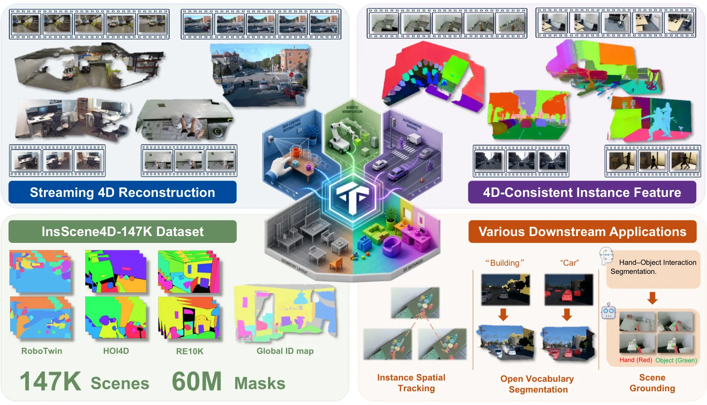
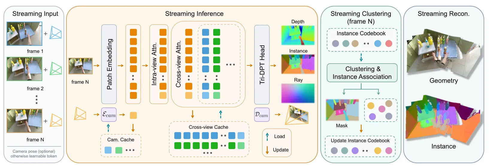
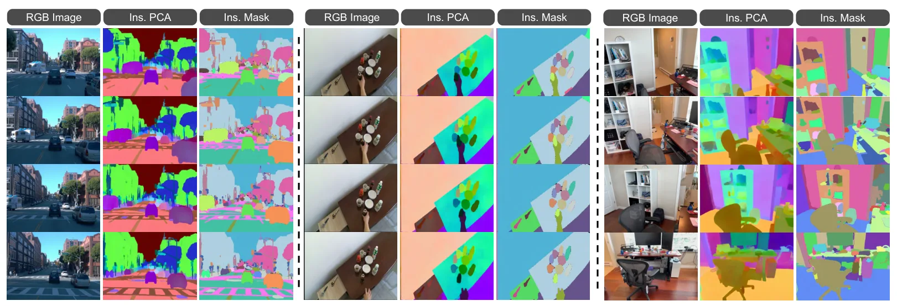
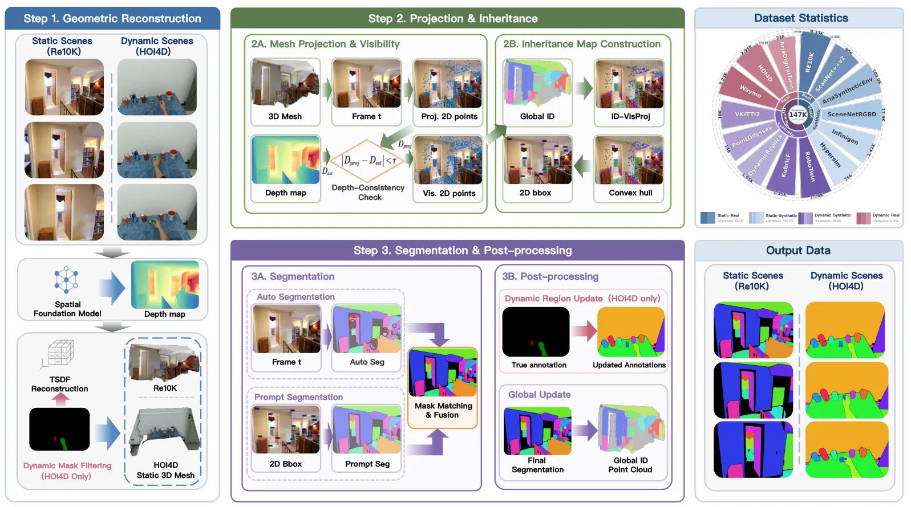
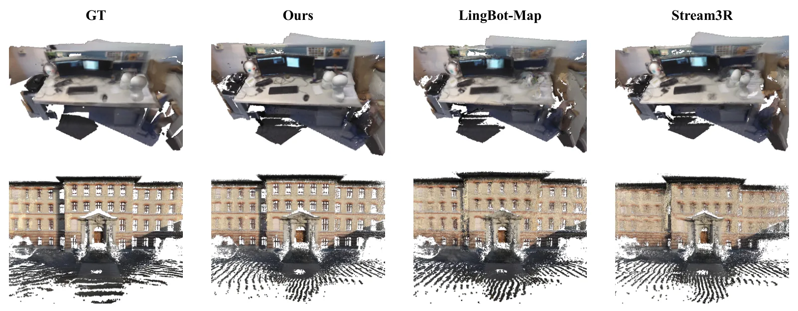
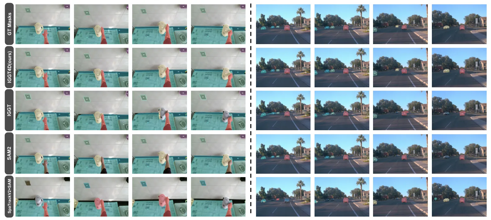
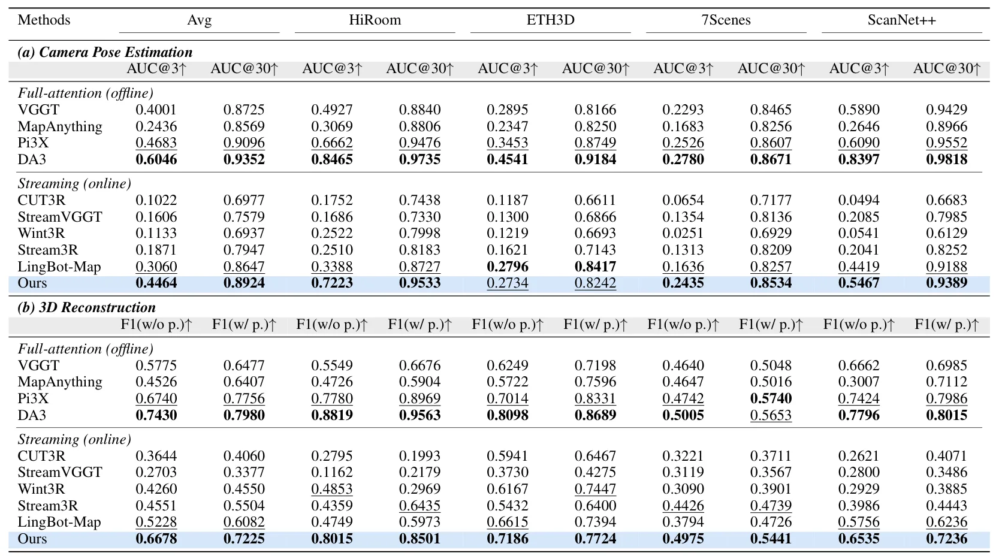
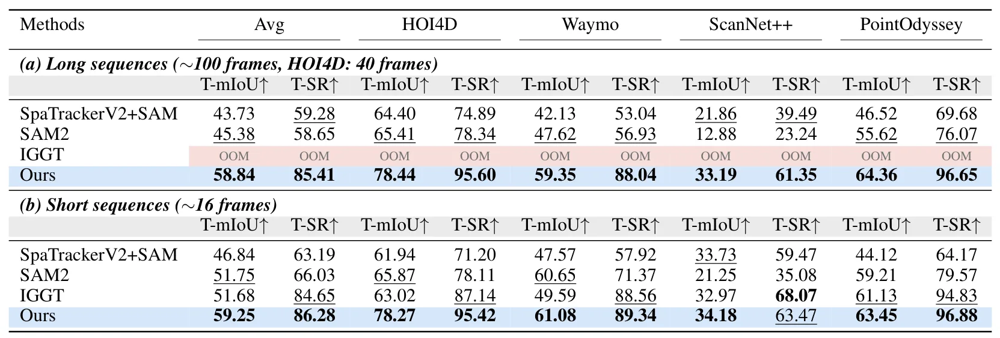

IGGT4D：流式实例落地的四维几何 TransformerIGGT4D: Streaming 4D Instance-Grounded Geometry Transformer
动态流式重建、位姿和实例统一建模高度相关，数据规模也突出；实时性、回环和长期内存需深入核查。
一句话工作总结
在视频流中联合增量维护相机运动、场景几何与持久对象身份，面向动态长序列在线 4D 理解。
摘要
IGGT4D 面向连续视频流的在线四维场景理解，顺序处理帧并通过 causal spatial-temporal modeling 复用历史上下文，增量更新相机运动、几何和对象身份的统一表示，从而支持动态长场景中的前馈重建与几何—实例一致性。作者还构建 InsScene4D-147K，提供真实/合成、静态/动态场景的 RGB、depth、pose 和时序一致 instance masks。实验覆盖三维重建、位姿估计、实例空间跟踪与开放词汇分割。
Real-world spatial intelligence requires agents to understand scenes from continuous video streams, where objects move, persist, disappear, and reappear over time. While recent spatial foundation models have enabled generalizable feed-forward 3D reconstruction, most streaming methods remain geometry-centric and lack temporally consistent object-level understanding. Meanwhile, existing semantic reconstruction and 3D-aware vision-language methods largely rely on externally extracted 2D semantic cues or loosely coupled geometry inputs, limiting unified geometry-instance learning in long dynamic scenes. In this paper, we propose IGGT4D, a streaming instance-grounded geometry Transformer for online 4D scene understanding. IGGT4D processes video frames sequentially, reuses historical context through causal spatial-temporal modeling, and incrementally updates a unified representation of camera motion, geometry, and object identity. This enables long-sequence feed-forward reconstruction with geometry-instance consistency in dynamic environments. To address the lack of high-quality 4D supervision, we further construct InsScene4D-147K, a large-scale dataset spanning real/synthetic and static/dynamic scenes, with RGB images, depth, poses, and temporally consistent instance masks generated by an automated geometry-guided annotation pipeline. Experiments on 3D reconstruction, pose estimation, instance spatial tracking, and open-vocabulary segmentation demonstrate that IGGT4D outperforms existing streaming baselines while maintaining scalable online inference for long dynamic sequences.
中文解读摘录
- 作者：Zhengyu Zou, Hao Li, Kuixuan Jiao, Liu Liu, Tingyang Xiao, Xiaolin Zhou, Fangzhou Hong, Zhizhong Su
- 价值判断：在线顺序处理长视频，以 causal spatial-temporal context 增量维护相机运动、几何和对象身份统一表示，切中动态环境长期一致性问题。
- 资源与结果：构建含 RGB、depth、pose 与时序一致实例 mask 的 InsScene4D-147K；在重建、位姿估计、实例空间跟踪和开放词汇分割上优于 streaming baselines。
- 后续核查：实时吞吐、历史上下文内存增长、回环/对象再出现机制、动态物体与相机运动可观性。
- 链接：arXiv · 项目页
图表/页面预览
{kind=link}

{kind=link}

{kind=link}

{kind=link}

{kind=link}

{kind=link}

{kind=link}

{kind=link}
